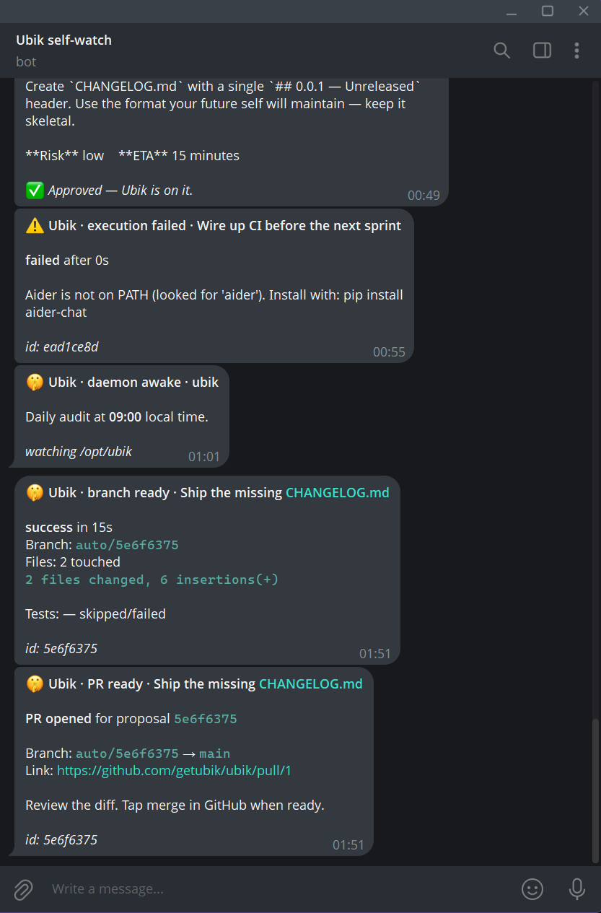
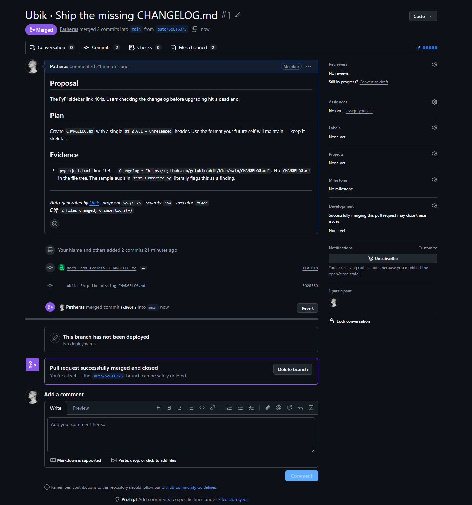

PSSSST.DEV · BY UBIK · APACHE 2.0
Psssst!
An AI resident engineer for your codebase. Whispers findings. Proposes fixes. Waits for your tap.
What it does
Ubik lives next to your repository. While you sleep it reads the codebase, watches competitors, scans for trends, and proposes specific improvements with evidence and a plan. When you tap ✅ on Telegram, it ships the fix through Aider, Claude Code, or any agentic executor — onto a feature branch, with tests, as a PR.
It actually works.
FIRST SELF-IMPROVING MERGE · MAY 10, 2026 · 02:13 LOCAL
Ubik audited its own repository, noticed CHANGELOG.md was
missing, sent the proposal to Telegram, wrote the file via Aider on a
fresh worktree branch, and opened
PR #1. We tapped
merge. A minute later the daemon had self-deployed the change. Eighty-six
minutes wall-clock end-to-end — most of it spent reading proposal cards
on a phone.

@ubik_self_bot
- 00:48Audit cycle kicks off.
glm-5.1reads 63 files in 81 seconds. - 00:49Eight findings extracted. Eight proposal cards land on Telegram with severity, plan, and evidence.
- 01:51Operator taps ✅ on the missing-changelog card. The Telegram spinner clears in under a second.
- +14sAider commits
ff0f018on branchauto/5e6f6375inside an isolated git worktree.1.8ktokens in,84out. - +17sVerifier pushes the branch and opens PR #1 against
mainvia the GitHub REST API. - 02:12Operator merges on GitHub.
- 02:13Deploy cron pulls the new
main, reinstalls, restarts the daemon.CHANGELOG.mdis live in/opt/ubik. Loop closed.
Quickstart
pip install psssst
ubik init
ubik run --dry-run # smoke test
ubik run # for realOr run it as a Model Context Protocol server inside Claude Desktop / Cursor:
ubik mcpStack
GLM-5.1 Claude Agent SDK Pydantic AI MCP uv + ruff + ty OpenTelemetry Apache 2.0